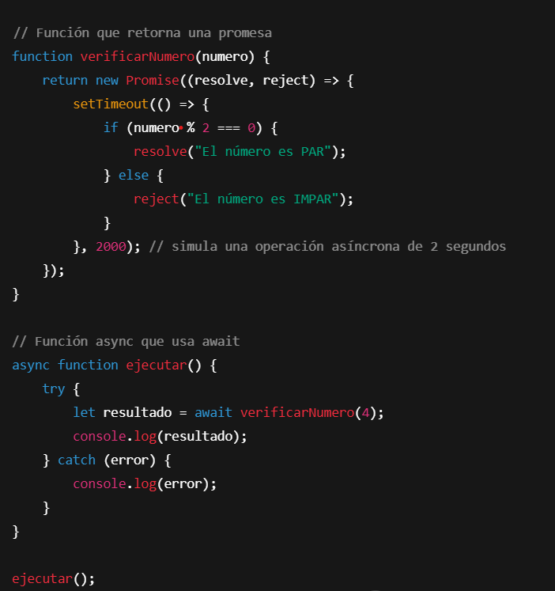
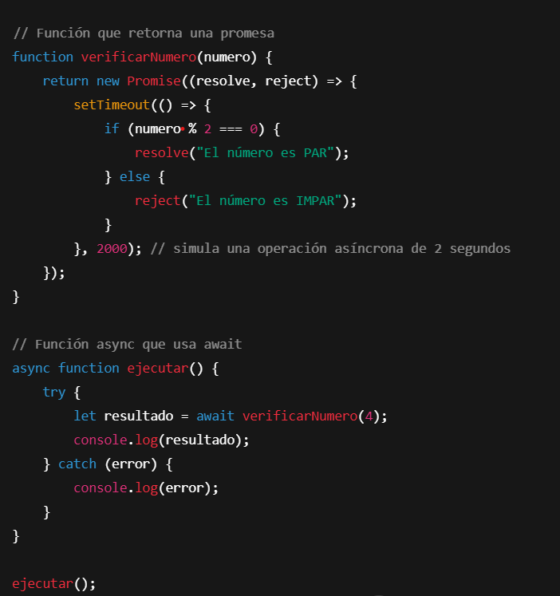

Actividad 5 - Async/Await
Async y Await son una forma más sencilla y legible de trabajar con promesas en JavaScript. Permiten escribir código asíncrono como si fuera paso a paso, mejorando la claridad.
Ejemplo Aplicacion Async Await:
Async y Await son una forma más sencilla y legible de trabajar con promesas en JavaScript. Permiten escribir código asíncrono como si fuera paso a paso, mejorando la claridad.
Ejemplo Aplicacion Async Await:
